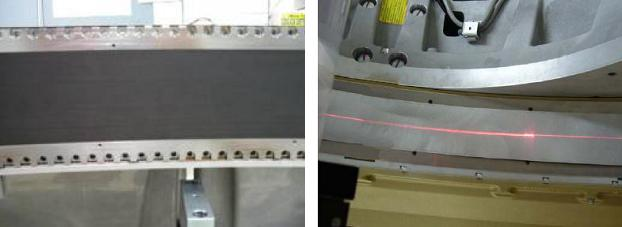
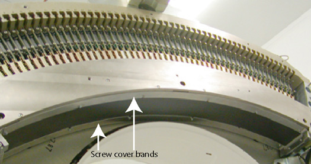
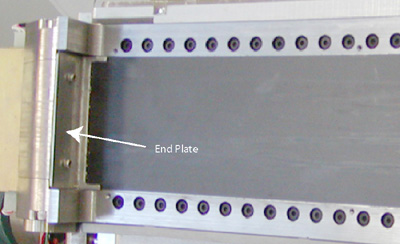
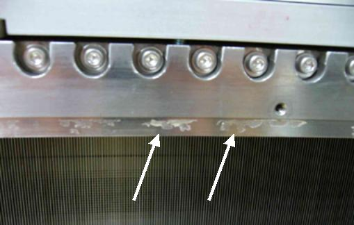
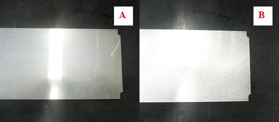
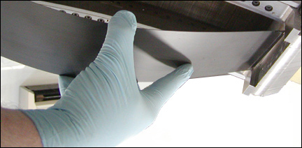
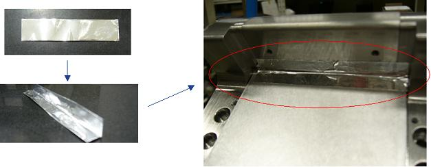
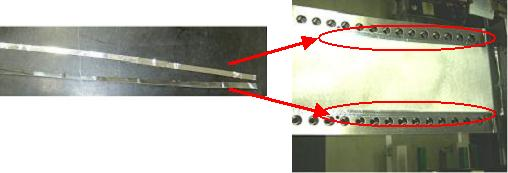
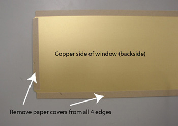

Operating Documentation
Direction 5193574-800, Rev# 22
LightSpeed 7.X Service Methods
Module Version 4.0, Version Date 6/12/15
Operating Documentation |
| Required Persons | Preliminary Reqs | Procedure | Finalization |
|---|---|---|---|
| 1 | 15 min. | 60 min. | 75 min. |
This procedure defines the information necessary to properly remove and install the detector window. CT750HD systems are equipped with either a black detector window or a silver detector window. It is important to verify that the replacement window ordered matches the current window on the system. Refer to Illustration 1 below for a visual comparison of the two windows.
Illustration 1: Silver Window and Black Window Comparison

| Left | Black window on VCT and early HD systems |
| Right | Silver window on HD systems |
| Last Revised: | June 12, 2015 |
| Item | Qty | Effectivity | Part# | Manufacturer | |
|---|---|---|---|---|---|
| 2.5 mm Hex wrench | 1 | - | - | - | |
| 2.5 mm Hex driver bit | 1 | - | - | - | |
| Torque Driver | 1 | - | - | - | |
| Gloves (to keep detector window clean) | 1 pair | - | - | - | |
| Thin flat blade screwdriver and/or suction cup (See Illustration 4) | 1 | - | - | - | |
| Item | Qty | Effectivity | Part# | Manufacturer |
|---|---|---|---|---|
| paper towels for cleaning | AR | - | - | - |
| alcohol wipes | AR | - | - | - |
| Item | Qty | Effectivity | Part# | Manufacturer | |
|---|---|---|---|---|---|
| Black Detector Window | 1 | - | 5184667 | - | |
| Silver Detector Window | 1 | - | 5351808 | - | |
| ||||
| Detector collimator damage may occur if you are not careful. Extreme care must be taken. | ||||
Remove gantry right side cover.
Stop the rotor of X-ray tube in case of Liquid Bearing Tube before HVDC off. Refer to Liquid Bearing Tube Rotor stop procedure for details.
Disable Axial Drive and HVDC on the service switch panel.
Position the detector at 12 o’clock.
| NOTE: | This is mandatory to make sure no debris gets behind the detector window and that nothing falls in and touches the detector collimator plates. They will damage easily and then a full detector replacement will be required. |
Lock gantry rotation.
Remove the rest of the Gantry covers.
Window removal is almost identical for both types of detector windows. Step 4 contains the differences in the removal procedures.
Remove screw cover bands. (Illustration 2 shows plenum removed for clear view but there is no need to remove plenum.)
Illustration 2: Screw Cover Bands

Remove detector window end plates (2 screws), one on each end of the detector window.
Illustration 3: End Plates

Wipe off any dust or debris that has collected under the end plates or screw cover bands prior to removing the detector window. This will help reduce the chances of debris getting behind the detector window.
| ||||
| Cuts/Lacerations | ||||
| Silver window assembly uses Aluminum tapes with very thin edges that may cut fingers | ||||
| Use caution when working with these Aluminum tapes |
| ||||
| Do not touch or poke the thin collimator plates under the detector window. They are about one inch (2.5cm) away from the detector window but if damaged will require a full detector replacement. | ||||
Carefully pull up the detector window on the high channel side of the detector (107 degree weight stack side).
| NOTE: | A conductive adhesive is used to hold the window in place
that still allows the window to be removed. For the silver window, the adhesive (Al tape) lies on top of the window instead of between the window and collimator,, so window should pull up as tape is removed. If needed, use method for black window (below). For the black window, you will need to use a small thin flat blade screwdriver to start to pull up the window. A suction cup, if available, works very well in this instance (refer to Illustration 4). If using a thin blade screwdriver, it is best to use it around the module 54 area. |
Illustration 4: Suction Cup Example

Illustration 5: Window Removal

Illustration 6: Detector Collimator Plates

Remove any adhesive left by the old detector window prior to installing new window. Use alcohol pads to wipe off the old adhesive. Do NOT spray or pour anything on the detector only use damp pads for wiping. See Illustration 7.
Illustration 7: Detector Window Residue

Pull any covering off the new detector window. Inspect the new detector window for any scratches or debris. Wipe off the front and back side of the window and make sure no packing material is left on the window surfaces.
Install new detector window such that the glossy side (see Illustration 8) faces down and contacts the collimator assembly. Refer to Illustration 9 that shows the method of inserting the end of the window into the rails when finishing installation.
Illustration 8: Glossy (A) and Non-Glossy (B) Window Surfaces

Illustration 9: Insert End of Window

Fold short Al tapes (pre-cut) in half and attach both ends of the silver window. Refer to Illustration 10
Illustration 10: Short Al Tape Placement

Attach long Al tapes around the outside of the new window. Al tape should align to edge of counter holes on the rail (refer to Illustration 11) Do not cover over the screw holes.
Illustration 11: Long Al Tape Placement

Install the cover bands and torque screws according to Table 1.
Table 1: Screw Cover Band Torque Specs
| 0.8 N-m | 0.6 lb-ft | 7 lb-in | 8.1 Kg-cm |
Pull any covering off the new detector window. Inspect the new detector window for any scratches or debris. Wipe off the front and back side of the window and make sure no packing material is left on the window surfaces.
Pull the tape off the conductive adhesive around the edge of the window. Make sure the conductive adhesive is completely exposed.
Illustration 12: Black Detector Window Taped Edges

With the copper side facing into the detector, carefully lay the new window in place starting from the low channel (48 V PS) end and pressing it into the groove in the detector rails as you lay it down along the detector face. See Illustration 9 that shows the method of inserting the end of the window into the rails when finishing installation.
Make sure the window is seated in the notched portion of the rails so it is flush with the outer surface of the rails.
Install the end bracket and screws by hand to avoid cross threading of the screws. Then torque the screws to:
Table 2: End Bracket Screw Torque Specs
| 0.8 N-m | 0.6 lb-ft | 7 lb-in | 8.1 Kg-cm |
Illustration 13: Install End Brackets

Reinstall the screw cover bands and torque the screws according to Table 1
Install the Gantry covers.
Unlock gantry rotation.
Restore all gantry power and wait for detector to warm up.
Run FastCal.
| NOTE: | If Detailed Cal was previously run with the damaged detector window, then a full Collimator Cal, Detailed Cal, and FastCal will be required, NOT just a FastCal. |
Perform a System Scanning Test from the [Functional Checks] menu of the service manual.